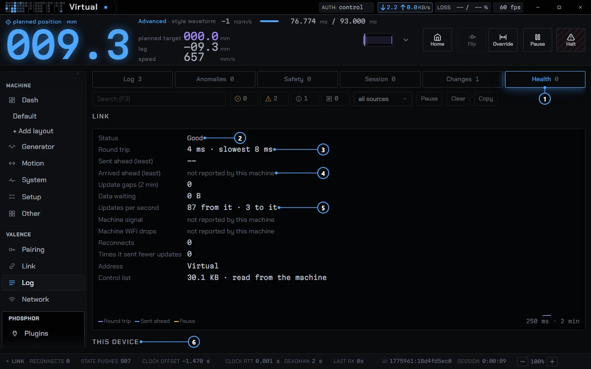
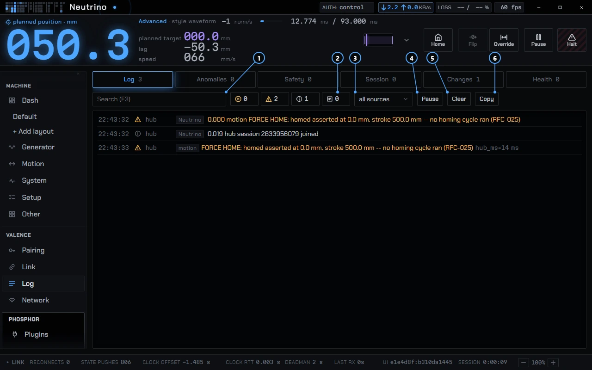

Troubleshooting
The messages Phosphor shows, quoted from the app, and what to do about each. Search this page for the one you see.
Finding and joining a machine
Scan and connect
No LAN reply on UDP 22096: no machine answered the network probe, so Phosphor went on to Bluetooth. Check that the machine is powered and on your network, or type its address.LAN discovery failed: …: the probe itself could not run. The reason follows the colon. Type the address instead.No hub on BluetoothandBluetooth scan failed: …: Bluetooth found nothing, or could not scan. Check that Bluetooth is on and that you granted Phosphor permission.Enter a hub address: the address field was empty.Retrying <address> in N s: the link dropped and Phosphor is redialing. Retry now skips the wait.Failed: …: the reason follows. Retry now tries again.- In the top strip,
Reconnecting: no hub link,Failed: no hub linkandLink error: …mean the same thing on every page. No WiFi endpoint known: Upgrade to Wi-Fi is grayed because the machine has not told Phosphor a Wi-Fi address over Bluetooth.<address> unreachable, staying on BluetoothandWiFi upgrade failed, back on Bluetooth: the machine offered a Wi-Fi address, but Phosphor could not open a session on it. You stay at the watch tier until it connects.
Set up and pairing
Press Pair on the machine: the ask is waiting for a button press.Another ask is pending: Pair is refusedandAnother configure ask is pending: double-press approves neither: two clients asked for configure at once. One of them has to give up before either is approved.Denied,Ask expired,Knock expired,No answer within the pairing window: nobody approved in time. The window is 120 s. Ask again.Pairing is off on the machineandRefused: knock is off and no window is open: press Pair on the machine to open a window, then try again.Pending list fullandRefused: pending list full: the machine holds a limited number of waiting knocks. Deny or wait for the others to expire.Granted control, not configure: the window gave you control. To get configure, press Ask configure and double-press Pair. The double press is a draft behavior (see Connecting).Bluetooth link lost: the link dropped mid-setup. Reconnect and ask again.Joined, but the hub did not appear on WiFi: the machine accepted the network and never showed up on it. Try again, then check the passphrase and that the router is in range of the machine.No answer from the hub: a write got no reply. When the machine replies with a refusal, the line names it, for examplerefused: NOT_HOMED. For that one, home the machine.session not authorizedandNeeds configure: your tier is too low for that control. See access tiers on Connecting.Machine is moving: a Wi-Fi scan was refused because the machine is in motion. Phosphor asks again every 4 s.
When Home pulses a red border, the machine needs homing before it will move.
Pauses, stutter and lag
Open Log, then the Health tab. It has three cards, Link, This device and Machine, and a list of incidents kept on this device. The same line also appears in the top strip's status slot. Each line is a measurement, followed by the one thing to try.

- The Health tab.
- Status reads Good when nothing is wrong.
- Round trip gives the typical and the slowest time.
- "Not reported by this machine" means it does not send that number.
- Updates per second, from the machine and to it.
- This device starts below Link.
Link
Motion paused N ms · this device fell behind: this computer sent the next moves too late. Close other apps.Motion paused N ms · WiFi delay N ms (likely): the moves left on time and arrived late. Move closer to the router. "Likely" means Phosphor has no timestamp from the machine to prove it.Motion paused N ms · machine fell behindandcause unknown: send a report; for an unknown cause, send one if it repeats.Moves sent only N ms ahead: raised when the margin stays under its threshold for 5 s. Close other apps.Round trip N ms, worst N ms: raised over 50 ms typical for 10 s. Move closer to the router.No machine updates for N s: the machine's position updates stopped arriving. Check the Wi-Fi.N KB waiting to send: the network is not taking data. Check the Wi-Fi.Link dropped N times in 5 min: raised at 2 drops. Move the machine or the router closer.Machine cut updates on N channels: the machine sent fewer updates because the link was busy. Disconnect other devices that use the machine.Rail stalled on N% of frames: updates arrive late or bunched, so the dot stands still and then jumps.
This device
Responses delayed up to N ms: raised over 25 ms for 2 min. Close other apps.Memory up N MB in N min: memory keeps rising after cleanup, raised at +100 MB. Restart Phosphor.Background tasks up from N to N: restart Phosphor.Window hidden while playing: some systems slow a hidden window, which can pause the machine. Keep Phosphor in front while a script plays.Video dropped N frames in N s: a script's video skipped frames. Close other apps.Screen drawing N frames a second,Clock drift N ms,Processor load serious: close other apps, and restart Phosphor if clock drift persists.
Machine
Machine fault: …: open the machine's Hardware page.Machine free memory down N%: restart the machine when it is idle.… at N, limit N: a part is within 10% of its temperature limit. Let it cool.Machine restarted: the machine rebooted since the last connection.
Some Machine lines read "not reported by this machine". The machine has to declare those readings first WIP.
Send a report
On an incident, Send report opens a review of every field in the report. Hold the button for 1.5 s to send. That opens a prefilled GitHub issue under your own account; Phosphor sends nothing itself. Save report writes the same data to a file without an account. The report holds numbers and version strings, and no script name, machine name, address or log text.
The log
The Log page has tabs for Log, Anomalies, Safety, Session, Changes and Health. The Log tab filters by Errors, Warnings, Info and Debug, and by source, and it searches. Plugin errors appear there tagged plugin:<name>.

- Search, with F3 as the shortcut.
- Severity filters: Errors, Warnings, Info and Debug.
- The source filter.
- Pause freezes the list so new lines stop scrolling in.
- Clear empties the list.
- Copy puts the shown lines on the clipboard.
Phosphor also writes Phosphor.log to disk, at Info level, in release builds too. It is never uploaded. The privacy page lists the app's data folders on each platform, and for the Flatpak the folder is ~/.var/app/org.openvalence.Phosphor.
Platform notes
Linux with an NVIDIA driver
NVIDIA's proprietary driver cannot back WebKitGTK's DMABUF renderer. Without a workaround the window stays blank on X11, and the Wayland connection dies with protocol error 71. Phosphor sets WEBKIT_DISABLE_DMABUF_RENDERER=1 by itself when /proc/driver/nvidia exists, and a value you set yourself wins. If the window is still blank, start Phosphor with that variable set.
Linux Flatpak
The Flatpak keeps its data in ~/.var/app/org.openvalence.Phosphor/data/com.phosphor.app/, and a .deb install's folder is not visible to it. If you forced GDK_BACKEND=x11 on a Wayland session, GTK fails to start unless the run adds --socket=x11.
macOS
CI builds are ad-hoc signed and not notarized. After you copy Phosphor out of the .dmg, either run xattr -dr com.apple.quarantine /Applications/Phosphor.app or use System Settings, Privacy & Security, Open Anyway after the first refused launch. macOS then asks for two permissions, Local Network (to find machines) and Bluetooth (to set them up). Without Local Network, scans fail without an error, so allow both.
Windows
Phosphor needs Microsoft's WebView2, which comes with Windows 11 and current Windows 10. Windows asks about the firewall the first time you turn on Settings, Open to LAN. Phosphor never edits firewall rules.
Open to LAN
<port> unavailable or Not open: … means the port could not be used. A port below 1024 needs privileges on Linux and macOS. Phosphor falls back to a port the system picks and advertises that one.
Buttplug server
If the server will not start, the Buttplug pane shows the latest error, for example that the port is taken. The default port is 12345. Change it in the pane's Settings tab. The port and the device types can only change while the server is stopped.
Android
Android requires the location permission before any app can scan for Bluetooth devices. Phosphor asks for it for that reason only.